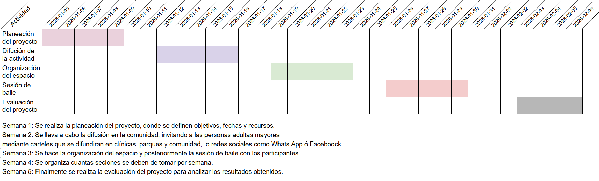

Los adultos mayores de mi comunidad sufren problemas de salud a causa de la falta de movimiento.
Fomentar la práctica del baile para mejorar la salud física y emocional de las personas adultas mayores.
Promover el bienestar físico, emocional y mental del adulto mayor evitando el sedentarismo y las enfermedades.
Tener una mejor calidad de vida con la actividad física por medio del baile, liberando estrés y ansiedad.
Los estándares del proyecto "Baila para estar saludable" consiste en la participación de los adultos mayores, realizar sesiones de baile de manera organizada y segura, fomentar el ejercicio físico por medio del baile y verificar que la actividad se cumpla de acuerdo con la planeación del proyecto.
Que las personas adultas mayores de la alcaldía Álvaro Obregón practiquen actividad física mediante el baile, mejoren su salud y desarrollen hábitos de vida saludables.
